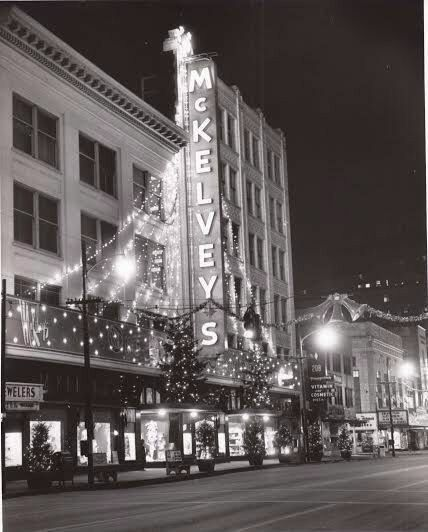

Ward-Thomas Museum


Robert Wilson’s Niles Memories
Ward — Thomas
Museum
Home of the Niles Historical Society
503 Brown Street Niles, Ohio 44446
Click here to become a Niles Historical Society Member or to renew your membership
Click on any photograph to view a larger image, click on image again to zoom into photograph.
|
Calvin’s Drug Store  McKelvey's Department Store
The Men’s Bible Class of First Christian Church on the lawn in front of the church. The stain glass rosette window of the First Christian Church on Arlington Street. |
Reminiscences
of Christmas, circa 1955, in Niles and the Steel Valley—
Robert Wilson. Christmas decorations were up in Calvin’s drug store, Isaly’s Dairy, and Hoffman’s dry goods store, the latter looking positively Dickensian. One could catch the Christmas spirit in the music of Bernard’s Music Store. Best of all, we knew that Mary Trimbur, the elevator operator at the Niles Bank Building, would get dressed up in her Santa Claus suit. Christmas shopping would usually take us to Youngstown. We often took the bus and then–off to McKelvey’s and Strouss’s. The elaborate, animated window displays were riveting, followed by a whisk out of the cold air, through the revolving doors, and into that special atmosphere of a big department store. I can still smell the perfume, hear the store signal bells quietly chiming, and ascending (with some anxiety) the escalators. In McKelvey’s the main object, of course, was the fifth floor toy department with its magnificent train layouts and Santa Claus. I vividly recall the mixture of apprehension and excitement as we approached the throne of that august personage. Then we sat on that red velvet lap and recited a list–a bike, Viewmaster, Joe Palooka punching bag, Hopalong Cassidy suit–my sister, Georgia, wanted a Tiny Tears doll. Strouss’s had its own delights, including a “fish pond” grab bag and frosted malts that had a flavor which I have never seen duplicated. We sometimes had lunch at McKelvey’s coffee shop, and then would leave through the Arcade out to the bus station. This terminal was a huge, grey–dingy barn of a place with numbers hanging from the ceiling for each lane. The diesel fumes of that old bus terminal are as much a part of my Christmas memories as the pine scent of the tree. On at least two occasions the Wilson family went to Cleveland–once on the train!–the great Terminal Tower, lunch at Halley’s department store where they served children’s portions in little mock ovens, and best of all–Sterling–Linder–Davis. What made this last store so special was the biggest Christmas tree you ever saw. At the bottom of the tree were a number of great stuffed animal toys, all of which had a pull string which would cause the bear to growl and the hyena to laugh. Back in Niles, the Youngstown Vindicator, The Niles Times, and the television (our blonde Philco) were alive with Christmas. Special Santa Claus comic strips appeared in the paper, and “Mr. Jing-a-Ling, Keeper of the keys” would plug Halley’s department store. About two weeks before Christmas, the family usually went for an evening ride to see the exterior decorations at houses around town—Santas on roofs, carolers, reindeers, and beautiful deep blue lights reflected in the snow. Bentley Avenue had the best, in my opinion. Just before Christmas, I went with my Dad (Bob Wilson, Jr.) to buy the tree, usually out to a place on Rt. 422. Back then, 422 still had vestiges of its country character. Once the tree was set up and decorated, we put the tinsel icicles on—always three to a branch and draped just so. Finally, we set up the rather elaborate Lionel train set around the tree. |
|
Postcard of the old Disciple Church, First Christian Church, with old rectory on right. |
We found time to attend the Christmas candlelight service on Christmas Eve at First Christian Church where we were members. My father came to church only occasionally and his arrival always provoked comments such as “There’s Bob Wilson, nobody told me the world was coming to an end”, … The old church was quite lovely–the walls were dimly lit and candles illumined the great, rosette-style windows. I can still see the choir behind the maroon, velvet–covered railing, just stage left of the pulpit. There were my Great Aunt Frances Froelich, sweet, chubby old Mrs. Hargate, Dorothy Evans, Helen Crawford, and Oliveann Davis, looking like a lovely angel who had deigned to grace our church for a while. |
A photo of the Parish House of First Christian Church which was purchased in 1918 and razed in 1966. It sat on the northeast corner of Arlington and Church Streets. where the Masonic Temple parking lot is located. |
When the service concluded, we walked out the front door past the great bell pull, and out into the crisp night, crossing Church Street and into the narrow alley between the parish house and the Masonic Temple. Christmas was at hand. One night, after all the Christmas day festivities were over, and my sisters had gone to bed, my Dad and I ran the train late into the night. All the lights were off except the lights on the tree and on the train set. Dad was lying on the floor, propped up on his left elbow with his right hand on the transformer control. I sat right next to him, working the remote switches. I can still see my father in that sort of dim, reddish–green light, grinning but concentrated, as he sent the Santa Fe careening along the track. Merry Christmas! Contributed by: Dr. Bob Wilson III, 2023 |
|
|
|


{kind=link}